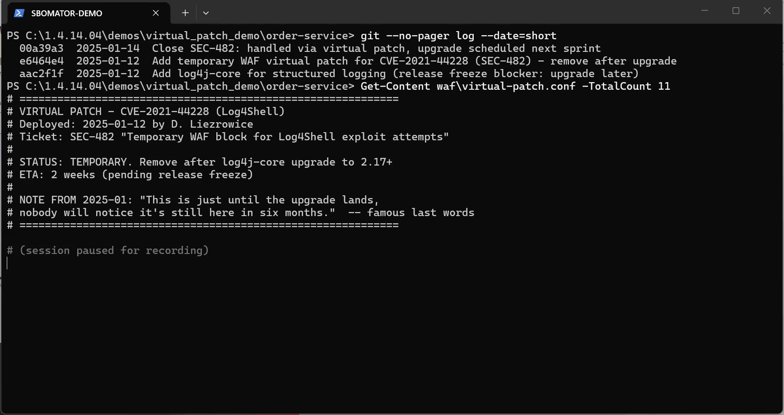
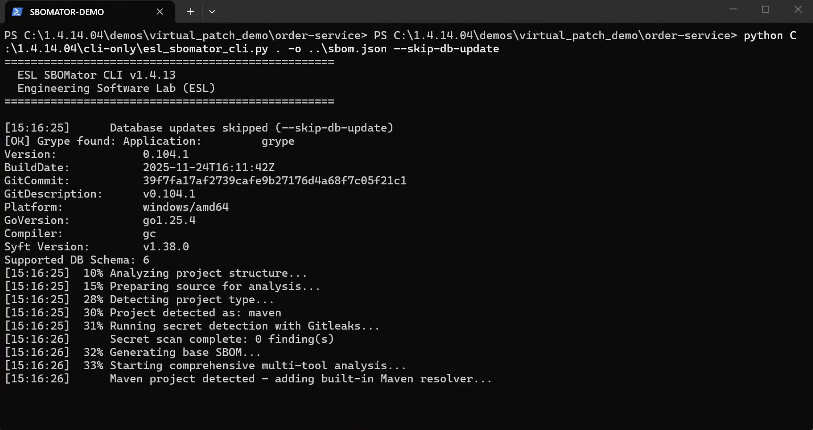
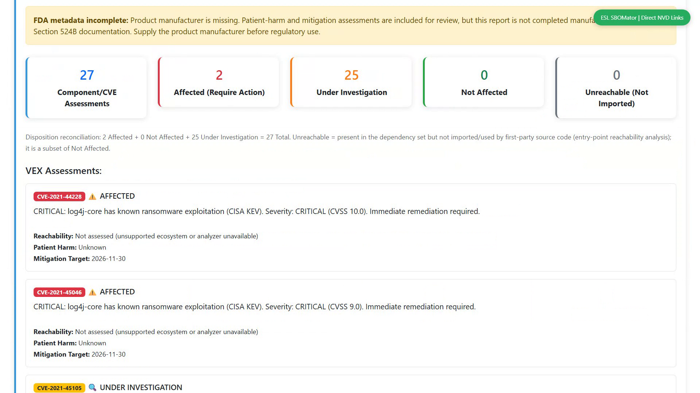
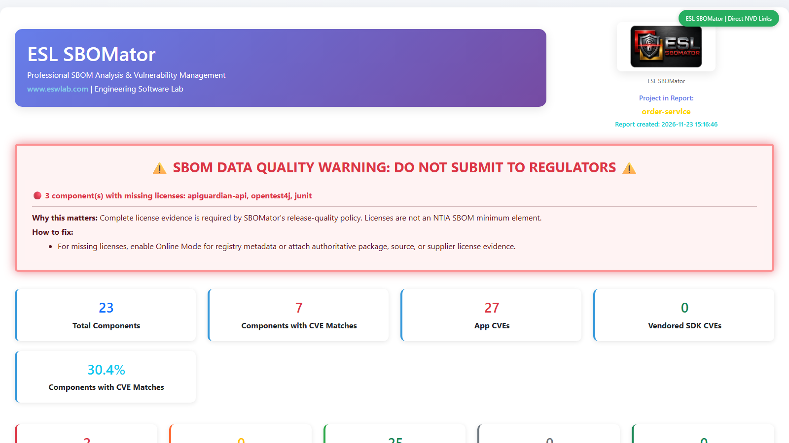

ESL SBOMATOR FIELD NOTE · 01
The Virtual Patch That Forgot
A WAF rule can make a vulnerability disappear from every scanner you trust. An SBOM is the one instrument that still sees it. Here is a small demo project where exactly that happened, and the scan that resurfaced it.
10.0
CVSSv3.1 of CVE-2021-44228, still present in the build
22 mo
age of the "temporary" virtual patch when the scan ran
23
components in the generated SBOM, all VEX-assessed
0
real patches shipped since the ticket was closed
SBOMator CLI 1.4.13

ESL SBOMator: SBOM, CVE and VEX analysis
Demo project: order-service (Maven, log4j-core 2.14.1)

Daniel Liezrowice
CTO, Engineering Software Lab
Builds SBOM and supply chain tooling for medical, automotive and embedded teams. Author of ESL SBOMator, a SBOM generation and vulnerability analysis platform.
linkedin.com/in/liezrowice
THE PATTERN · 02
How a virtual patch becomes permanent
The sequence is always the same. Only the dates change.
January 2025 two days later every month since
┌──────────────┐ ┌──────────────────┐ ┌─────────────────────────┐
│ CVE-2021-44228│ │ ticket SEC-482 │ │ external scans: clean │
│ hits the news │ --> │ closed: HANDLED │ --> │ pen tests: pass │
│ no patch yet │ │ "VP in place, │ │ dashboard: green │
│ WAF rule goes │ │ upgrade next │ │ │
│ in at the edge│ │ sprint" │ │ real patch: never ships │
└──────────────┘ └──────────────────┘ └─────────────────────────┘
What the rule does
It blocks the known exploit strings, jndi lookups and their obfuscations, at the edge. It changes no code and no version anywhere.
What it does not do
It does not remove log4j-core 2.14.1 from the build. The vulnerability is still there; only one path to it is closed.
Why it stays
No expiry date, no owner after the author leaves, and a green dashboard that never asks the question again.
THE EVIDENCE · 03
The project still carries both the vulnerability and the promise

git log
Three commits tell the whole story: log4j-core added for "structured logging", the temporary WAF rule the same morning, and SEC-482 closed two days later.
waf\virtual-patch.conf
"STATUS: TEMPORARY. Remove after log4j-core upgrade to 2.17+. ETA: 2 weeks." The file is still in the tree, 22 months later.
WHY SCANS STAY CLEAN · 04
The front door looks patched. The build never changed.
what the edge sees
attacker ──> [ WAF: virtual patch SEC-482 ] ──X ${jndi:...} blocked, ${lower:j}ndi blocked
^
|
external scanners, pen tests: 0 findings, year after year
what the edge never sees
internal service ─────────────────> order-service (no WAF in this path)
|
+-- log4j-core 2.14.1 CVE-2021-44228, CVSS 10.0
Edge blindness
Scanners that test through the front door measure the WAF, not the software. The rule answers their probes; the library keeps its CVE.
Internal traffic
Service-to-service calls, direct APIs and forgotten legacy endpoints bypass the WAF entirely. The virtual patch has no opinion about them.
One variant away
A new obfuscation the rule does not match, and the "patched" vulnerability is exploitable again through the front door too.
THE SCAN · 05
SBOMator reads the software, not the traffic

one command, no agents, no traffic
python esl_sbomator_cli.py . ^
-o ..\sbom.json --skip-db-update
What the workflow produced
- CycloneDX SBOM: 23 components, Maven auto-detected
- CVE enrichment against local and OSV sources
- VEX document: 27 exploitability statements
- Rich HTML report (sbom.html, 812 KB)
THE PAYOFF · 06
The scan says what the dashboard refused to say

VEX assessment, verbatim from the report
"CRITICAL: log4j-core has known ransomware exploitation (CISA KEV). Severity: CRITICAL (CVSS 10.0). Immediate remediation required."
AFFECTED
VEX status for CVE-2021-44228 on log4j-core 2.14.1
27
VEX statements: 2 affected, 25 under investigation
THE GAPS · 07
Three gaps no WAF rule can close
1. Reachability
An SBOM tells you the vulnerable component exists; VEX and reachability analysis tell you whether the vulnerable code is actually reachable from input. The virtual patch answers neither question, it just blocks one route.
2. Coverage
The rule sees only the traffic that crosses it. Internal service-to-service calls, direct API endpoints and legacy interfaces bypass the edge. Nobody audits the rule against the real topology.
3. Expiry
Nothing forces the rule to die. The SBOM says what needs a real patch; the expiry date, the owner and the decommissioning step live in vulnerability management, and they are the first things a forgotten ticket loses.
THE VERDICT · 08
Different questions, different answers
SBOM
Says what is broken: the exact component, version and location, regardless of what blocks the traffic in front of it.
VEX + reachability
Says whether it matters: affected or not, exploitable or not, with a triage record that survives the engineer who wrote the rule.
Virtual patch
Is the bridge between knowing and fixing. Legitimate, useful, and temporary by definition. With an expiry date it buys time; without one it rents it.
The line to remember
A virtual patch without an SBOM-backed patch plan is not temporary insurance. It is the permanent state in a temporary costume.
REPRODUCE · 09
Run it yourself in two minutes
the full demo tree
C:\1.4.14.04\demos\virtual_patch_demo\
order-service\
pom.xml # log4j-core 2.14.1, added 2025-01-12, never upgraded
waf\virtual-patch.conf # ModSecurity virtual patch, SEC-482, "remove in 2 weeks"
INCIDENT.md # the ticket: closed as HANDLED, remediation: none
sbom.json # CycloneDX SBOM, 23 components (scan output)
sbom_VEX.json # 27 VEX exploitability statements (scan output)
sbom.html # the rich report the screenshots come from
the command
python C:\1.4.14.04\cli-only\esl_sbomator_cli.py ^
C:\1.4.14.04\demos\virtual_patch_demo\order-service ^
-o C:\1.4.14.04\demos\virtual_patch_demo\sbom.json --skip-db-update
What to look for
In sbom.html: CVE-2021-44228 on log4j-core 2.14.1, severity Critical (10.0), VEX state AFFECTED, plus CVE-2021-45046 and CVE-2021-45105 from the same library.
Honest limits
Offline scan mode (--skip-db-update): results depend on the local CVE database vintage. Reachability for the Maven ecosystem is reported as "not assessed" in this build; VEX triage is manual where the analyzer has no coverage.
CLOSING · 10
Scan the software, not the traffic
The edge forgets. The inventory does not. Give every virtual patch an expiry date, and give every expiry date an SBOM that can call the bluff.

Daniel Liezrowice
CTO, Engineering Software Lab
ESL SBOMator generates SBOMs, enriches them with CVE data and produces VEX exploitability statements for real-world triage.
linkedin.com/in/liezrowice ·
eswlab.com